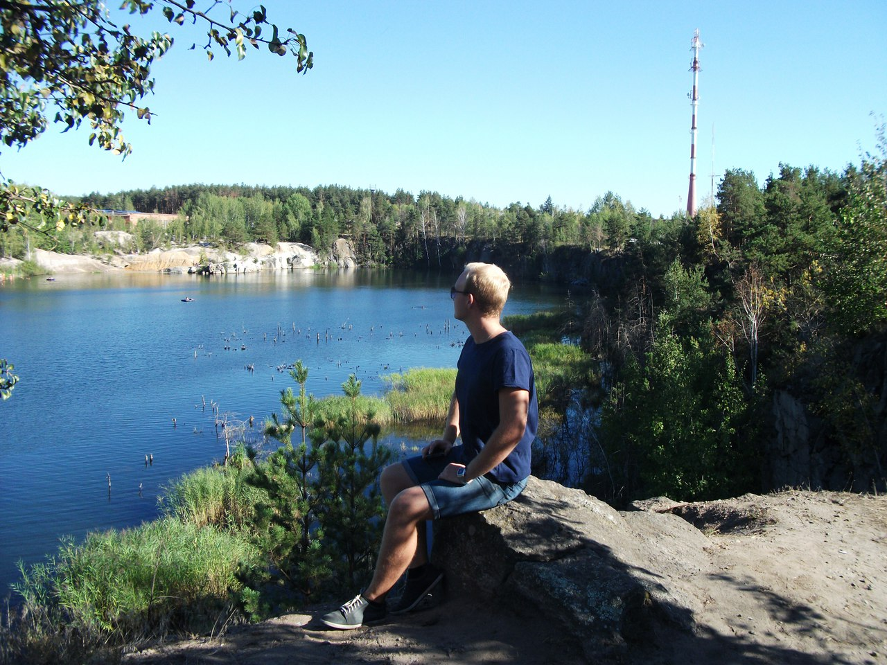

Trip to the Carpathians
If you want to enlarge the photo, just click on it!
This is Trip to the Carpathians, and if you've never been here, you should probably go soon. It's incredibly beautiful, all these emotions can not be conveyed. Every day trekking in the mountains. You probably will think that it is hard physically and it will not bring moral pleasure, but only a burden and fatigue. So know that you are wrong, your spiritual state after such a rest will be filled with emotions and you will get emotional catharsis :)
Korostyshevsky quarry

|

|
This is Korostyshevsky quarry, and it's wonderful place, I advise everyone) I have not yet seen such pure water in the lake, maybe it a little cool, but in such weather it's exactly what you need) And there's just something to see :)
From VDNH through Pirogovo to the Zhukov island
This is Camping trip, and it's adventure lasted a whole day. We walked about 23 km. I was born in Kiev, but I did not even know about certain places :)